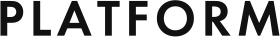
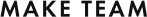
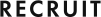
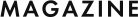
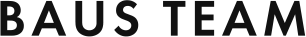
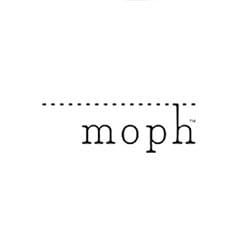
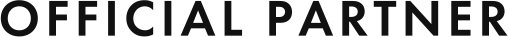
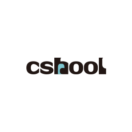

プラットフォームについてBAUSではクリエイティブプラットフォームとして、クリエイターとユニットをつなぐための機会が大きく3つあります。
すべてのコンテンツはユニット（企業・団体）・クリエイター（個人）に関わらず掲載・応募いただけます。
-
ユーザータイプ

クリエイター -

ユニット


MAKE TEAMはオープンイノベーションにも最適です。
プロジェクトを一緒に作り上げるチームスタッフを探す
制作するプロジェクトに対して必要なスタッフを、役職ごとにピンポイントでスピーディにアサインすることができます。急ぎのプロジェクトから、自主制作、専門性を求める仕事など多種多様なプロジェクトご利用頂けます。

顧問契約や師弟関係の構築にもご利用いただけます。
長く共に働くメンバーを探す
ユニット(団体・企業)が、メンバー(社員)として長期的に制作活動を共にし、仕事や作品を作ってくれる人材と出会うきっかけづくりを提供する場です。

クリエイティブ情報だけでなくイベント情報も掲載します。
MAKE TEAMで行われたプロジェクトや、今注目のユニット、イベントや業界のニュースなど、気になるトピックを取り上げて掲載をしていきます。

運営について私たちが作りたいのは、ただの就職サイトでもWEBマガジンでもクラウドソーシングサービスでもありません。
クリエイティブと社会の関係性において、関わる全ての人々にとって｢次｣と｢続き｣を作る、そんなプラットフォームをBAUSは目指しています。
｢次｣とは、例えば、次世代を担うようなクリエイターや、アーティストや、カルチャーを作るということ。｢続き｣とは、今ある団体・企業の｢続き｣のストーリーを描いていくことです。そして、BAUSはそのような「機会」を作って、社会においてクリエイティブの価値を高めていきます。
クリエイティブに関わる全ての人をサポートし、よりクリエイティブな社会を創ることを目的として、私たちはこのプラットフォームを運営していきます。
-
 BAUS発起人
BAUS発起人加藤 晃央
1983年、長野県生まれ。
武蔵野美術大学芸術文化学科卒。
大学3年時、数々の挫折から「脱美大」を図り、独立系ベンチャーキャピタルでインターン。
CIVIやブランディングをはじめ、広告制作を請負うことを通して「属美大」を強く感じる。
内定を断り、学部4年時に起業し、モーフィングを設立。設立当初の事業テーマは、「美大で培ったものの学外実践」で、商品開発や広告企画制作請負の他、フリーマガジンPARTNERの発行、展覧会THE SIX、美大生に特化した就職メディア「美ナビ」、就職展覧会「美ナビ展」を立ち上げる。ムサビ卒業後、「アートをもっと一般の人に広める」ことを事業テーマとし、美術館のPR業務や教育施設でのワークショップを請け負う。しかし、まだまだ一部の限られた人の間でしか、アートは楽しまれていないことを実 感し、アートを広める場所を「アート寄りな場所」ではなく「一般寄りな場所」に変更。
そして 合言葉「ARTSY」を編み出す。
得意なことは、思いつきの行動と、意味のないイタズラ。
二児の父で現在東京仕事と長野県育児にて多拠点居住。
自身も多様な働き方を摸索し、在籍する組織間を横断活動中。
京都を拠点とするクリエイティブアソシエーション世界株式会社在籍。
クリエイティブチーム株式会社ティモテ在籍。
アートシェアリングサービスARTSTAND株式会社代表取締役。
株式会社リライト取締役。
お笑い創作集団にがウーロン在籍。 FB : https://www.facebook.com/akiou.kato -
クリエイティブディレクター
井口 皓太
1984年横浜出身。
武蔵野美術大学基礎デザイン学科卒。
大学4年次にデザインスタジオ株式会社ティモテ（TYMOTE）を設立。
以後、グラフィックデザイン、映像、音楽、空間演出、WEBと、総合的なデザインを行っている。新宿伊勢丹でのインスタレーションや、NHK太宰治の特別ドラマの制作、書籍『Cut, Paste, Collective』を著者として出版するなど、活動は多岐に渡っている。
また、若手作家を一堂に会したアーティストショップ『POMY』を代官山にオープンさせるなど、同世代の場作りにも積極的に参加をしている。
自身は、映像の領域を主に担当。ビジュアルコミュニケーションを軸に企業のモーションロゴや、番組のオープニングタイトル、CM、ミュージックビデオの制作等を担当している。
TYMOTE : http://tymote.jp/ -
運営主催
株式会社モーフィング
〒185-0021 東京都国分寺市南町 3-22-31 島崎ビル 3F
Tel: 042-300-2370
Fax: 042-300-2371
メールアドレス : info@m-inc.jp
WEBサイト : http://www.m-inc.jp/

支援団体

- 